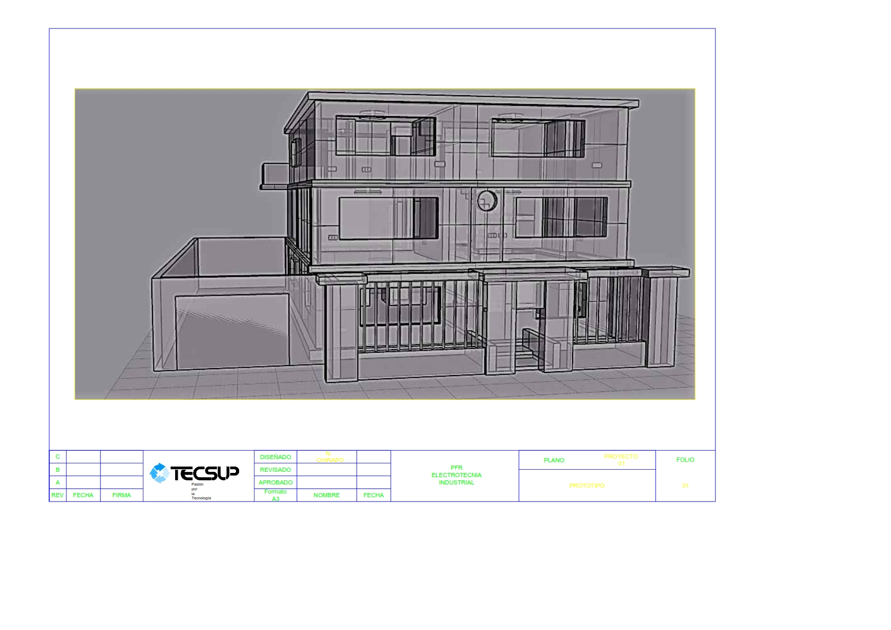

Prototipar
En este apartado se desarrolara el diseño del protitopo del producto.
Se elaborara el prtotipo con las mejores ideas obtenidas.
Finalmetese sera presentado para asi poder interactuar con el ususario.
Visualizacion de maqueta

Visualizacion de prototipo de sensor

SOPORTE ESTRUCTURAL
SIRENA INALAMBRICA
Prototipar
Consiste en crear artefactos físicos o cualquier producto innovador que nos permitan tangibilizar de forma ágil una idea, para poder mostrarlos a los usuarios. Una herramienta para aprender lo máximo posible de los usuarios en el menor tiempo posible y así poder adaptar nuestro producto o servicio para resolver sus problemas de verdad.
BOSQUEJO
Con los resultados realizados de nuestra entrevista se llegó a concluir el problema general que fue el hurto en las casas como también los Smartphone (celulares) y es la causa de que se genere en la ciudad Arequipa una inseguridad ciudadana, además se estableció puede evitar que haya este tipo de casos anteriormente mencionados, en los cuales la gente aún se siente inseguro hasta en su propio hogar, por ellos se está optando poner sensores aislados de red eléctrica y red de internet para poder evitar el hurto en el hogar además de lograr la confianza en nuestra corporación y disminuyendo la inseguridad en la ciudad de Arequipa, nuestro producto tiene demasiadas ventajas las cuales una de ellas es la reducción de tensión mediante paneles solares y seguridad en las calles al momento de salir de su casa.
Documento - Diseño de casaDESARROLLO DE LA DESCOMPOSICIÓN FUNCIONAL DE LAS PARTES
Hemos encontrado el diseño de la maqueta lo cual tendrá soporte, sistema de sensor, sirena inalámbrica. El propósito del modelo son describir las funciones para poder ayudar con la información, identificar las oportunidades, y determinar el producto con un determinado de gastos.Más adelante se mostrará las características de nuestra alarma NJK-E y su respectiva funciones
MAQUETA
Se desarrolló una maqueta de acuerdo al diseño. Empezamos construyendo en el programa de AutoCAD lo cual da referencia a una casa común en la que incorporaremos las alarma NJK-E.
INFORMACION GENERAL
CONTACTORES DE PUERTAS MAGNETICAS